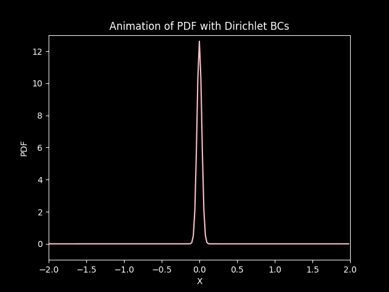
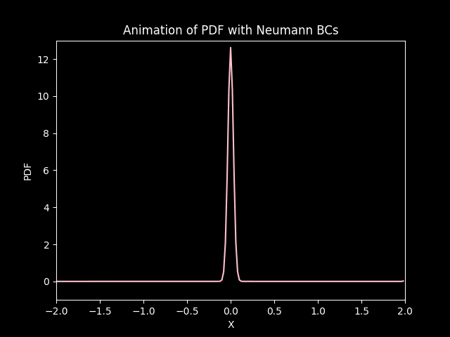
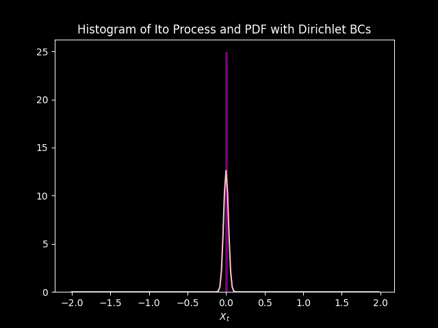

%load_ext autoreload
%autoreload 2
One dimensional Fokker-Plank equation#
%matplotlib inline
import numpy as np
import matplotlib.pyplot as plt
import matplotlib.animation as animation
plt.style.use("dark_background")
import sys, os
sys.path.append(os.path.abspath(os.path.join('..')))
import diffuconpy as dc
import animations
Stochastic Differential equation#
Let \(X_t\) be a Stochastic process and \(\mu(X_t, t)\) and \(\sigma(X_t, t)^2\) be measurable functions, called the drift and variance respectively. A Stochastic differential equation can be written as
such that \(B_t\) denotes a Wiener process (Standard Brownian Motion). Wiener process have the following properties
\(B_0 = 0\) always.
All \(B_t\) are independent random variables.
\(B_{t+u} - B_{t} \sim N(0, u)\).
\(B_t\) is a continuous random variable.
The Stochastic differential equation can be solved numerically using the Euler-Maruyama Scheme.
consider discrete time steps \(\{t_i\}^N_{i=0}\) such that \(t_i - t_{i-1} = \Delta t\). \(X_{t_{i}}\) can be approximated by the following
where \(X_0 = x_0\) and \(\Delta B_{t_{i}} \sim N(0, \Delta t)\).
Fokker-Plank equation#
Let the diffusion coefficient \(D(X_t, t) = \frac{1}{2}\sigma(X_t, t)\) and p(x, t) be the probability density function of the random variable \(X_t\) at time \(t\). \(p\) can be obtained by solving the Fokker-Plank equation, that is
Example below#
In the following example, consider constant drift and diffusion. So the Stochastic Differential equation is of the form
where \(X_0 = x_0\).
Let \(p(x, t)\) be the PDF of X_t at \(t>0\). \(p\) can be obtained from
Let
\(\mu = -0.1\), denoted by the variable name
Convection.\(D = 0.009\), denoted by the variable name
Diffusion.\(X_0 = 0\), initial value of the SDE.
The Fokker-Plank equation can be solved using the finite difference method for the convection-diffusion equation. See source code diffuconpy to see the full implementation of the finite-difference method. Click here for more information on the Fokker-Plank equation.
Stochastic Process#
Diffusion = 0.009
Convection = -0.1
# Ito Process model driven by standard Wiener process
# number of simulations
nsim = 1000
# Number of partitions
N = 200
t = np.zeros(N)
X_t = np.zeros((nsim, N))
X_t[:, 0] = 0 # Initial value
dt = (1-0)/N
mu_c = Convection
sigma_c = np.sqrt(2*Diffusion)
# Drift
def mu(X, t):
return mu_c
# Standard Deviation
def sigma(X, t):
return sigma_c
# Brownian motion (denoted by B_t in the brief)
def dW(dt):
return np.random.normal(loc=0.0, scale=np.sqrt(dt))
for j in range(nsim):
for k in range(0, N-1):
t[k+1] = t[k] + dt
x = X_t[j, k]
X_t[j, k+1] = x + mu(x, t)*dt + sigma(x, t)*dW(dt)
plt.plot(t, X_t[j])
plt.xlabel("time (t)")
h = plt.ylabel("Random Variable $X_t$")
h.set_rotation(90)
plt.show()
Thousands simulations of \(X_t\)
Initialising the Convection Diffusion Model#
# Number of space and time steps
Nt = 199
Nx = 200
# Space and time step size
dt = (1-0)/Nt
dx = (2-(-2))/Nx
# Setting up the initial condition
x = np.arange(-2, 2, dx)
# Initial Array
sigma = 0.01
amp = 1
# Initial condition
init = amp*(1/np.sqrt(0.001*2*np.pi))*np.exp(-(1/2)*((x**2)/0.001))
Boundary Conditions#
Dirichlet#
The Dirichlet boundary conditions take the following form
For all \(t>0\) and boundary points \(x_0\) and \(x_1\). In this example, let \(p_0 = p_1 = 0\).
Neumann#
The Neumann boundary conditions are defined as
For all \(t>0\). for this example, let \(p^{\prime}_0 = p^{\prime}_1 = 0\), or say there is zero ‘flux’ in the boundary.
Solving the PDE#
def solve(Nt, Nx, dt, dx, Diffusion, Convection, init):
FokkerPlank = dc.convection_diffusion_1dims(Nt, Nx, dt, dx, Diffusion, Convection, init)
sol_Dirichlet = FokkerPlank.solve_Dirichlet(boundary=[0, 0])
sol_Neumann = FokkerPlank.solve_Neumann(boundary_flux=[0, 0])
return sol_Dirichlet.solution, sol_Neumann.solution
dirichlet, neumann = solve(Nt, Nx, dt, dx, Diffusion, Convection, init)
Plotting the first time step#
# Plotting the 0th time step state
plt.figure(0)
ax = plt.axes(xlim=(-2, 2), ylim=(-1, 13)) # left bound -5 and right bound 5
ax.plot(x, dirichlet[0], color='pink')
plt.title('Solution at the 0th time step')
plt.xlabel('x')
plt.ylabel('density')
plt.show()
# Plotting the 0th time step state
plt.figure(1)
ax = plt.axes(xlim=(-2, 2), ylim=(-1, 13)) # left bound -5 and right bound 5
ax.plot(x, neumann[0], color='pink')
plt.title('Solution at the 0th time step')
plt.xlabel('x')
plt.ylabel('density')
plt.show()
Animating the Solution#
# Setting up the animation
FPS = 60
FRN = 199
FILE_1 = './img/convection_diffusion_in_1_dimension_dirichlet.gif'
FILE_2 = './img/convection_diffusion_in_1_dimension_neumann.gif'
# Animation of PDFs
animations.animation_1(
solution=dirichlet,
X=x,
xlab='X',
ylab='PDF',
title='Animation of PDF with Dirichlet BCs',
color='pink',
xlim_=(-2, 2),
ylim_=(-1, 13),
fps=FPS,
frn=FRN,
filename=FILE_1
)
animations.animation_1(
solution=neumann,
X=x,
xlab='X',
ylab='PDF',
title='Animation of PDF with Neumann BCs',
color='pink',
xlim_=(-2, 2),
ylim_=(-1, 13),
fps=FPS,
frn=FRN,
filename=FILE_2
)


In both cases, the distribution starts from its initial state and under goes diffusion (gets squished) and drifts (convection) down the negative side of the axis.
FILE_3 = './img/Ito_Process_Histogram_dirichlet.gif'
FILE_4 = './img/Ito_Process_Histogram_neumann.gif'
# Animation of PDFs with histogram of Ito process
animations.animate_histogram(
data=X_t,
solution=dirichlet,
X=np.arange(-2, 2, dx),
bins=100,
interval=100,
xlim=(-2, 2),
xlab='$X_t$',
title='Histogram of Ito Process and PDF with Dirichlet BCs',
color='purple',
color_curve='pink',
fps=60,
frn=201,
filename=FILE_3
)
animations.animate_histogram(
data=X_t,
solution=neumann,
X=np.arange(-2, 2, dx),
bins=100,
interval=100,
xlim=(-2, 2),
xlab='$X_t$',
title='Histogram of Ito Process and PDF with Neumann BCs',
color='purple',
color_curve='pink',
fps=60,
frn=201,
filename=FILE_4
)

The PDF modeled by the Fokker Plank equation approximates the distribution of data modeled by \(1000\) simulations of the Ito Process. Initially they do not match up, but sync up as each iteration goes on. This is due to the initial condition, saved in the variable init, is just an approximation of the Dirac delta function. so there is some (but very small) uncertainty at \(t=0\) according to the model. Unlike the simulations that have no uncertainty at \(t =0\), because \(X_0 = 0\) and \(B_0 = 0\).